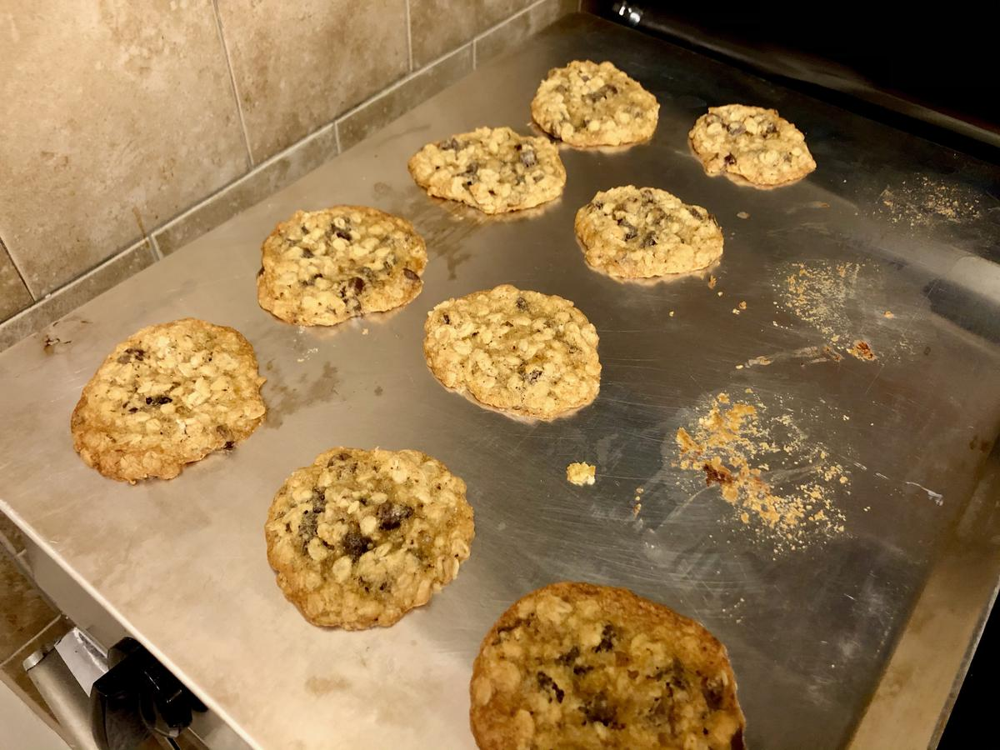

Based on A Nestle Recipe
Personal rating: 5 / 5

1.75 cups all-purpose flour
1 tsp baking soda
1/2 tsp salt
1 cup (2 sticks) butter, softened
1/2 cup granulated sugar
1.25 cup brown sugar, packed
2 tsp vanilla extract
2 Tbsp milk
2 large eggs
2.5 cup quick or old-fashioned oats
2 cups (12 oz) chocolate chips
Soften butter at room temperature
Preheat oven to 375F
In a small bowl, combine flour, baking soda, and salt (1)
In a large mixing bowl, combine butter and sugars until creamy using a hand mixer (2)
Measure out rounded Tbsp of dough on a light colored ungreased baking sheet
Bake 9-11 minutes until golden brown. Cool on a wire rack